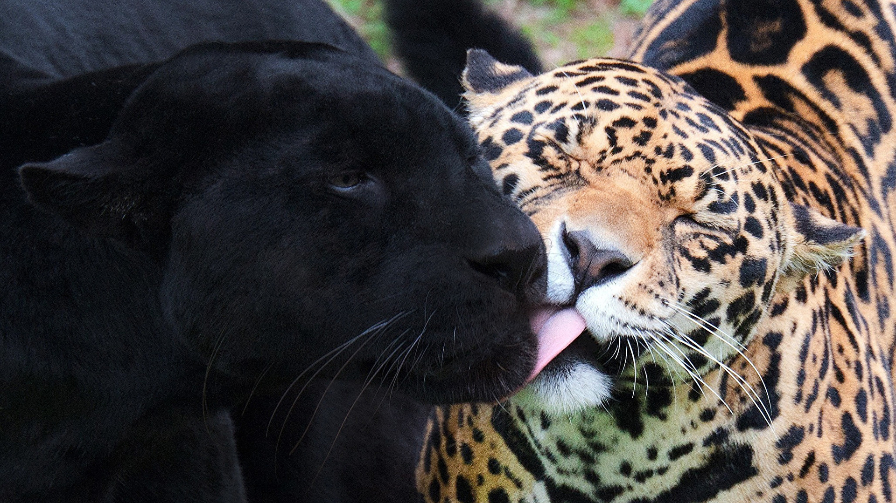

El leopardo (Panthera pardus) es un mamífero carnívoro de la familia de los félidos. Al igual que tres de los demás félidos del género Panthera: el león, el tigre y el jaguar, están caracterizados por una modificación en el hueso hioides que les permite rugir. También se lo conoce como pantera parda y, cuando presenta un pelaje completamente oscuro como pantera negra (melánico), El leopardo es uno de los grandes félidos más adaptables. Habita en todo tipo de hábitats, siempre que tenga un lugar donde esconderse y existan suficientes presas para sobrevivir; se encuentra presente en bosques y selvas, en las sabanas, en los sembrados y en lugares rocosos, e incluso en desiertos. En algunos hábitats, el leopardo desarrolla formas para evadir a otros depredadores mayores o más numerosos, como es el caso del león y las hienas en África, y el tigre en Asia. Realmente, el único factor que limita al leopardo son los humanos. El leopardo, al ser el gran felino más adaptable, es también el gran felino con más distribución en el mundo. Habita en África, Medio Oriente y algunas partes de Asia como Sri Lanka y la India.
El leopardo (Panthera pardus) es un mamífero carnívoro de la familia de los félidos. Al igual que tres de los demás félidos del género Panthera: el león, el tigre y el jaguar, están caracterizados por una modificación en el hueso hioides que les permite rugir. También se lo conoce como pantera parda y, cuando presenta un pelaje completamente oscuro como pantera negra (melánico), El leopardo es uno de los grandes félidos más adaptables. Habita en todo tipo de hábitats, siempre que tenga un lugar donde esconderse y existan suficientes presas para sobrevivir; se encuentra presente en bosques y selvas, en las sabanas, en los sembrados y en lugares rocosos, e incluso en desiertos. En algunos hábitats, el leopardo desarrolla formas para evadir a otros depredadores mayores o más numerosos, como es el caso del león y las hienas en África, y el tigre en Asia. Realmente, el único factor que limita al leopardo son los humanos. El leopardo, al ser el gran felino más adaptable, es también el gran felino con más distribución en el mundo. Habita en África, Medio Oriente y algunas partes de Asia como Sri Lanka y la India.
Los leopardos cazan preferentemente por la noche y acostumbran a pasar el día durmiendo entre la vegetación, en cuevas de otros animales o a menudo, sobre la rama de un árbol al que trepan con agilidad. Eso no quita que estén activos durante el día y por lo general suelen evitar en lo posible la presencia del ser humano debido al temor que les infunde. Para el leopardo, el árbol es a la vez donde descansa, desde donde observa y caza a su presa, y donde almacena su comida. Desde lo alto del árbol puede tender una emboscada a su presa y también dejar la comida fuera del alcance de algunos carroñeros u otros depredadores.
Alimentación
Los leopardos son cazadores oportunistas y versátiles, y tienen una dieta muy amplia que abarca más de cien especies de vertebrados. Se alimentan de una mayor diversidad de presas que las otras especies del género Panthera, y se han reportado leopardos comiendo prácticamente cualquier tipo de animal al que superen en tamaño o puedan abatir, desde escarabajos hasta elands comunes, aunque sus presas más frecuentes suelen estar en el rango de los 20-80 kg. La presa más grande abatida por un leopardo que se ha reportado ha sido un eland macho de 900 kg, aunque los leopardos no suelen cazar animales tan grandes. Su dieta consiste principalmente en ungulados (como diversos antílopes y hasta incluso elands; en Asia también cazan ciervos y jabalíes) seguido de primates, principalmente monos de diversas especies (entre ellas el cercopiteco verde y todas las especies de babuinos). Sin embargo, también se alimenta de manera oportunista de roedores, reptiles, anfibios, insectos, aves (especialmente aves terrícolas como la pintada vulturina), peces y depredadores más pequeños (zorros, chacales, martas y especies de félidos más pequeños como caracales, servales y gatos). Incluso son capaces de predar sobre licaones, doles, lobos, guepardos y ejemplares jóvenes de las mayores especies de pitónidos (pitón reticulada, pitón de Birmania y pitón africana de roca) y crocodílidos (cocodrilo del Nilo, cocodrilo de las marismas y cocodrilo de agua salada) con las que comparte territorio, en tanto que de las especies menores (cocodrilo enano, cocodrilo hociquifino africano y cocodrilo siamés) puede predar también sobre ejemplares adultos, al igual que sucede con el gavial, el falso gavial y el aligátor chino. Eventualmente se alimenta de las crías de las tres mayores especies de hiénidos, de las de los leones y de las de los cinco úrsidos con los que comparte territorio en algunas regiones de Asia (oso pardo, oso panda gigante, oso malayo, oso bezudo y oso negro asiático). Los ejemplares adultos de la mayoría de estos grandes predadores pueden abatir a los leopardos (leones) e incluso finalmente convertirse en sus predadores (crocodilios, pitones, hienas manchadas y úrsidos —excepto el oso panda gigante, que no preda sobre presas importantes—). El leopardo es uno de los pocos predadores de los bonobos y chimpancés adultos, y también puede predar sobre gorilas orientales y occidentales jóvenes (en el caso de los machos) y hembras adultas. Igualmente, de su amplia gama de presas, suele evitar a las que son potencialmente peligrosas por vivir en grupos (chimpancés, lobos, doles, licaones, babuinos, etc.) y/o ser especies que puedan ofrecer gran resistencia (guepardos) o abatirlo (gorilas).
Los leopardos deben competir por alimento y refugio con otros depredadores grandes como los leones, guepardos, hienas manchadas, hienas rayadas, hienas marrones, hasta cinco especies de osos y perros salvajes africanos y asiáticos (también compiten con los tigres chinos introducidos por los humanos) . Estos animales pueden robar la presa muerta del leopardo, devorar a sus crías o incluso matar leopardos adultos. Los leopardos coexisten junto a estos otros grandes depredadores cazando diferentes tipos de presas y evitando las áreas frecuentadas por ellos. Los leopardos también pueden retirarse a un árbol frente a la agresión directa de otros grandes carnívoros, pero se ha visto que los leopardos matan o atacan a competidores como el chacal de lomo negro, el caracal, el gato salvaje africano, el gato leopardo y los cachorros de leones, guepardos, hienas y perros salvajes. La partición de los recursos ocurre cuando los leopardos comparten su rango con los tigres. Los leopardos tienden a capturar presas más pequeñas, usualmente de menos de 75 kg (165 lb), donde los tigres están presentes. En áreas donde el leopardo es simpátrico con el tigre, la coexistencia no es la regla general; los leopardos son poco frecuentes donde los tigres son numerosos. La densidad media de leopardos disminuyó significativamente (de 9.76 a 2.07 animales por 100 km²) cuando la densidad media de tigres aumentó (de 3.31 animales/100 km² a 5.81 animales/100 km²) de 2004-2005 a 2007-2008 en el Parque Nacional Rajaji en India después de la reubicación de los pastores fuera del parque. Allí, las dos especies tienen una superposición dietética alta, y un aumento en la población de tigres dio como resultado una fuerte disminución en la población de leopardos y un cambio en la dieta del leopardo a presas pequeñas (del 9 % al 36 %) y domésticas (de 6.8 % a 31.8 % ). En el Parque Nacional Chitwan de Nepal, el tigre de Bengala coexiste con el leopardo indio porque hay una gran cantidad de presas, una gran proporción de presas es de menor tamaño y existe una vegetación densa. Aquí los leopardos mataron presas que van desde menos de 25 kg (55 lb) a 100 kg (220 lb) de peso, con la mayoría de las matanzas en el rango de 25-50 kg (55-110 lb); los tigres mataron a más presas en el rango de 50-100 kg (110-220 lb). A mediados del siglo XX, los leopardos de Amur estaban ausentes o rara vez se encontraban en la región de Primorie, en el Lejano Oriente ruso, en los lugares donde vagaban los tigres siberianos. Las encuestas realizadas a comienzos del siglo XXI revelaron que el rango de ambas especies se superpone en esta región, especialmente en áreas protegidas donde las densidades de ungulados son altas y la perturbación humana es baja.